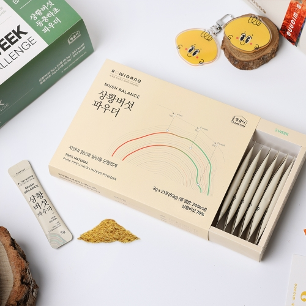
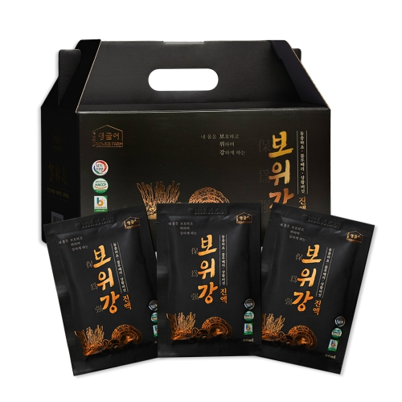

상황버섯과 동충하초를 분말과 진액으로
영글어농장은 상황버섯과 동충하초를 활용해 보위강 분말 스틱과 진액을 만듭니다. 분말과 액상 모두 한 포씩 포장했습니다.
제품별 원재료와 섭취 방법, 보관 방법은 포장에 적힌 안내를 확인해 주세요.
버섯 분말·진액 2종

보위강 머쉬밸런스
상황버섯·동충하초 분말 스틱 · 3g × 42포

보위강 상황버섯·동충하초 진액
액상 진액 · 80mL × 30포
상황버섯과 동충하초를 분말과 진액 등 여러 형태로 선보입니다.

영글어농장은 상황버섯과 동충하초를 활용해 보위강 분말 스틱과 진액을 만듭니다. 분말과 액상 모두 한 포씩 포장했습니다.
제품별 원재료와 섭취 방법, 보관 방법은 포장에 적힌 안내를 확인해 주세요.
상황버섯·동충하초 분말 스틱 · 3g × 42포

액상 진액 · 80mL × 30포